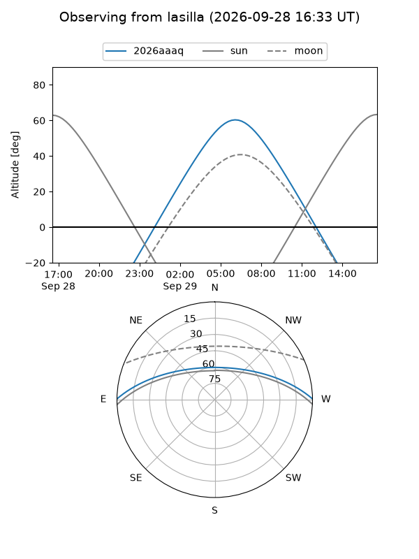
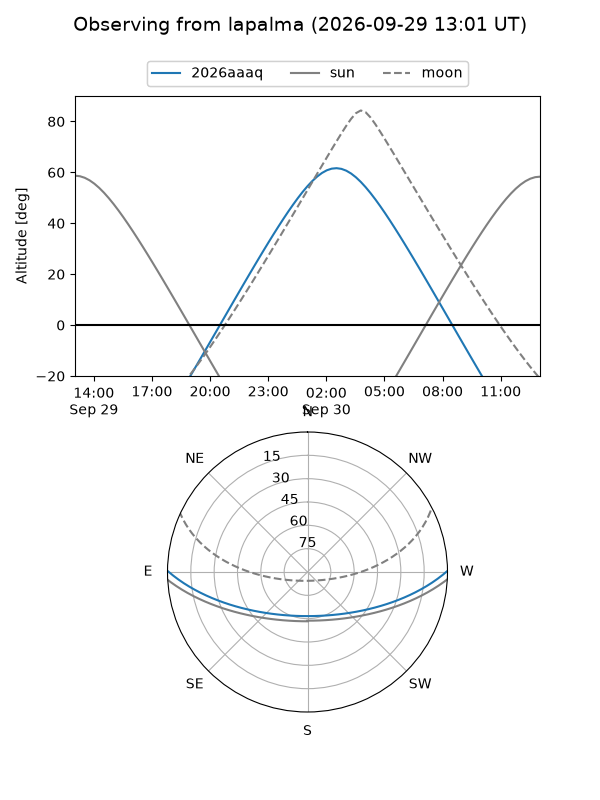
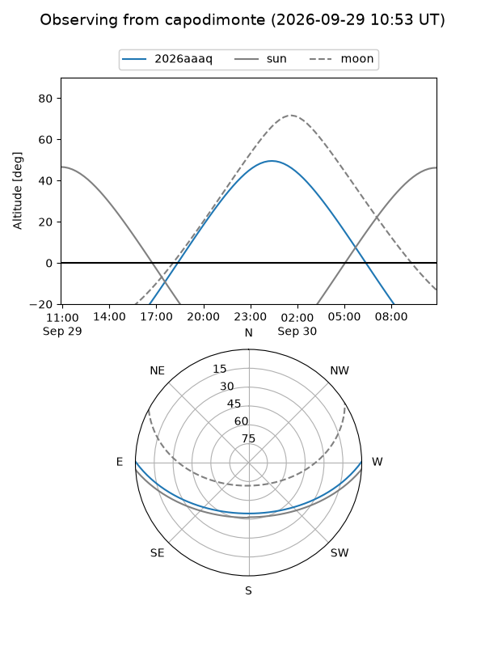
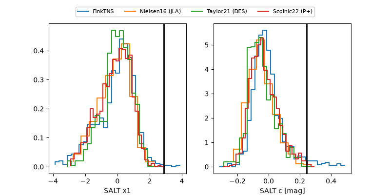

2026aaaq
Target 2026aaaq at 2026-09-29 17:48
Aliases and brokers:
FINK-ZTF: ztf.fink-portal.org/ZTF26absmxij
Lasair-ZTF: lasair-ztf.lsst.ac.uk/objects/ZTF26absmxij
ALeRCE-ZTF: alerce.online/object/ZTF26absmxij
YSE-PZ: ziggy.ucolick.org/yse/transient_detail/2026aaaq
TNS name: wis-tns.org/object/2026aaaq
Direct TNS query: direct search
alt names
ZTF26absmxij (ztf,fink_ztf)
2026aaaq (tns,yse)
ATLAS26llj (atlas)
PS26huq (panstarrs)
Coordinates:
equatorial (ra, dec) = 28.2052,+0.26836
equatorial (HMS+DMS) = 01:52:49.26,+00:16:06.08
galactic (l, b) = (153.7347,-58.88276)
Flags:
TNS type: nan
peak dt: +15.0
Photometry:
last atlasc=19.59, ztfg=20.04, ztfr=19.68
1 atlasc, 7 ztfg, 9 ztfr detections
Lightcurve
Visibility



Additional plots
